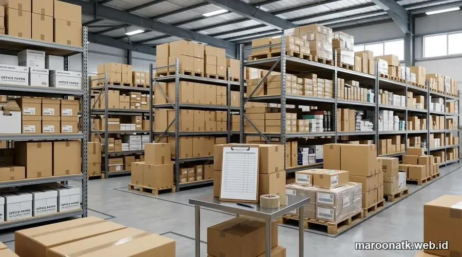
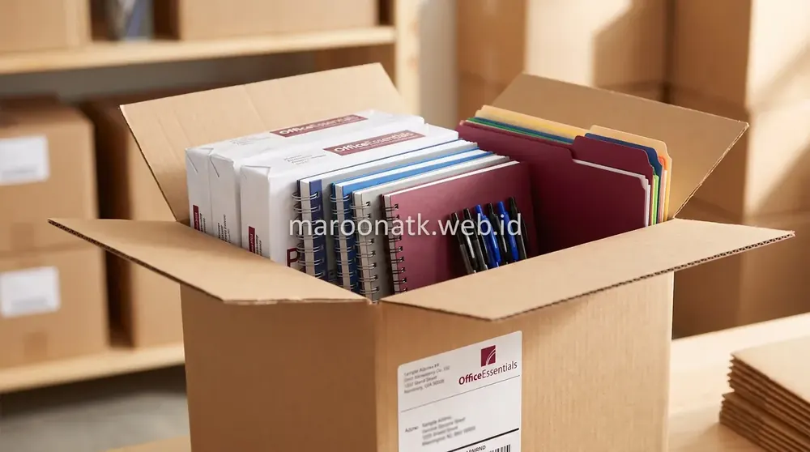
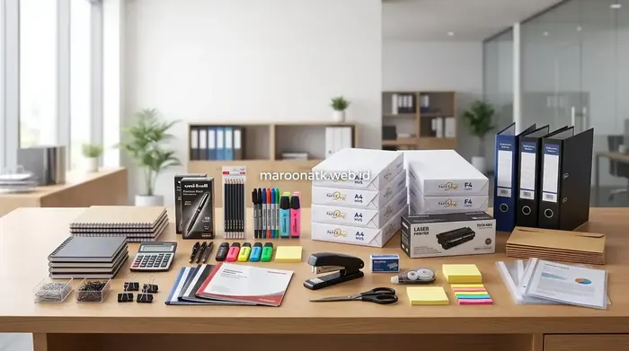

Pentingnya Evaluasi Terstruktur Memilih Supplier ATK Jakarta
Supplier ATK Jakarta untuk kontrak jangka panjang harus dievaluasi berdasarkan 9 pilar kapabilitas utama: legalitas PT & status PKP, kelengkapan katalog barang habis pakai (kertas HVS, toner asli, stationery), ketersediaan buffer stock gudang, komitmen SLA pengiriman 24–48 jam di wilayah Jabodetabek, transparansi e-Faktur PPN 11%, serta jaminan penggantian retur 1x24 jam. Seleksi yang ketat mencegah downtime administrasi dan temuan audit keuangan perusahaan.
Bagi departemen purchasing dan General Affairs (GA) perusahaan swasta maupun BUMN di kawasan metropolitan Jakarta, alat tulis kantor (ATK) merupakan urat nadi kelancaran administrasi harian. Mulai dari kertas continuous form, rim kertas HVS cetak dokumen legal, binder arsip akuntansi, hingga toner laserjet berkapasitas tinggi; ketiadaan salah satu item krusial ini dapat menghambat penerbitan invoice, persetujuan kontrak klien, dan pelaporan keuangan direksi.
Namun, godaan mencari vendor dengan penawaran harga termurah di marketplace retail sering kali berujung petaka operasional: pengiriman sering molor hingga berminggu-minggu karena ketiadaan stok di gudang, pengiriman toner rekondisi/palsu yang merusak drum printer kantor, hingga vendor perorangan yang tidak dapat menerbitkan faktur pajak resmi. Oleh sebab itu, menjalin kemitraan dengan supplier ATK Jakarta berbadan hukum resmi melalui kontrak pasokan tahunan (annual blanket order) menuntut proses evaluasi yang ketat dan terstruktur.
Cara Menghitung Kebutuhan ATK Kantor Bulanan Secara Akurat
Rumus praktis menghitung konsumsi kertas, alat tulis, dan consumable printer per departemen untuk efisiensi anggaran.
Matriks 9 Kriteria Evaluasi Supplier ATK Kontrak Jangka Panjang
Berikut adalah tabel parameter evaluasi menyeluruh yang wajib digunakan komite pengadaan sebelum memutuskan penerbitan Purchase Order atau kontrak pasokan jangka panjang:
| Kriteria Evaluasi | Yang Harus Dievaluasi | Indikator Supplier Baik | Risiko Jika Diabaikan |
|---|---|---|---|
| 1. Legalitas Perusahaan | NIB, NPWP Perusahaan, Akta Notaris PT, status Pengusaha Kena Pajak (PKP) | Badan hukum PT aktif, rekening giro resmi atas nama perusahaan, terdaftar di Kemenkumham | Transaksi fiktif, pembatalan audit internal, dan kesulitan klaim wanprestasi hukum |
| 2. Kelengkapan Produk | Variasi SKU kertas, binder, pulpen, cartridge toner original, filing storage | Katalog lengkap one-stop supplier, mampu menyediakan seluruh kebutuhan operasional divisi | Purchasing terpaksa mengelola puluhan vendor terpisah yang memboroskan waktu staf |
| 3. Ketersediaan Stok (Buffer) | Kapasitas gudang logistik fisik dan sistem manajemen inventory (ERP) | Memiliki buffer stock aman untuk item-item fast-moving perusahaan klien | Barang sering kosong (back-order) saat dibutuhkan mendesak untuk operasional |
| 4. SLA Ketepatan Waktu | Komitmen Service Level Agreement tertulis untuk fulfillment dan respon CS | SLA kepatuhan pengiriman ≥ 98% dengan batasan sanksi penalti yang jelas | Keterlambatan pengiriman tanpa kepastian kompensasi dari pihak vendor |
| 5. Lead Time Pengiriman | Waktu pemrosesan dari penerimaan PO hingga barang tiba di loading dock kantor | Lead time 24–48 jam untuk area Jabodetabek dengan opsi pengiriman darurat same-day | Aktivitas pencetakan dokumen legal dan invoice tertunda berhari-hari |
| 6. Sistem Logistik & Armada | Kepemilikan armada kurir internal, packaging tahan air, kerapian Surat Jalan | Armada box tertutup, kemasan diikat strapping band tebal bebas dari risiko basah/rusak | Kertas robek, box penyok, dan barang tercecer saat hujan di perjalanan |
| 7. Stabilitas Harga & TCO | Skema fixed price agreement tahunan, diskon volume, transparansi ongkos kirim | Harga terkunci selama masa kontrak 6–12 bulan, bebas biaya kirim minimum order | Anggaran operasional membengkak akibat kenaikan harga sepihak di tengah tahun |
| 8. Kepatuhan Administrasi | Penerbitan e-Faktur PPN 11%, invoice rapi, tanda terima BAST, opsi TOP 30 hari | e-Faktur sinkron dengan DJP, invoice mencantumkan nomor PO klien secara akurat | Penolakan pembayaran oleh Finance karena faktur cacat dan sanksi denda perpajakan |
| 9. Layanan After-Sales & Retur | Prosedur penggantian item cacat/rusak, respon komplain, dedicated account manager | Jaminan retur 1x24 jam tanpa debat, PIC khusus yang sigap melayani via WhatsApp | Staf komplain merasa diabaikan dan barang rusak menumpuk menjadi kerugian beban kantor |

Gudang logistik terorganisir dengan sistem manajemen inventaris modern memastikan pasokan kertas HVS, toner, dan alat tulis kantor selalu siap kirim secara konsisten ke seluruh korporasi di Jakarta.

Spesifikasi Paket Pengadaan ATK Bulanan untuk Efisiensi Anggaran Perusahaan
Standardisasi daftar belanja ATK rutin untuk menekan pemborosan belanja barang habis pakai di lingkungan korporat.
Kunci Sukses Kontrak: Mengunci Service Level Agreement (SLA)
Kontrak pengadaan B2B yang baik bukan hanya tentang mencantumkan daftar harga satuan barang, melainkan mengikat vendor pada Key Performance Indicator (KPI) operasional. Tiga klausul SLA yang wajib ditegaskan meliputi:
1. Lead Time Pengiriman Wilayah Jabodetabek
Tetapkan batas waktu pengiriman maksimal 24 hingga 48 jam sejak Purchase Order resmi diterbitkan. Pastikan supplier memiliki armada logistik mandiri yang mampu menjangkau seluruh area perkantoran utama di Jakarta (Sudirman-Thamrin, SCBD, Kuningan, TB Simatupang, Kelapa Gading, hingga Puri Indah) tanpa ketergantungan pada kurir ekspedisi pihak ketiga.
2. Tingkat Akurasi Pemenuhan Pesanan (Order Fulfillment Rate ≥ 99%)
Salah satu kekecewaan terbesar purchasing adalah menerima barang yang tidak sesuai merk atau spesifikasi (misal: memesan kertas PaperOne 80gr tetapi dikirim merk lain tanpa konfirmasi). Kontrak harus mewajibkan persetujuan tertulis sebelum adanya substitusi merk sebanding jika terjadi kelangkaan pasokan dari pabrikan.
3. Jaminan 100% Produk Original (Anti Barang Palsu)
Pasar ATK di kota besar rentan terhadap peredaran toner rekondisi yang dikemas menyerupai unit original baru. Tuntut surat garansi keaslian resmi dan kesediaan mengganti rugi kerusakan printer bila terbukti cartridge yang dikirim menimbulkan kebocoran serbuk atau kerusakan mekanisme drum pemanas.

Mengenal Keuntungan Sistem Paket Pengadaan Alat Tulis Kantor B2B
Efisiensi administrasi pengadaan dan konsolidasi faktur pajak melalui sistem paket pasokan kantor bulanan.
Mengapa Korporasi Jakarta Memilih Maroon ATK
Sebagai penyedia sarana kantor terpadu, Tentang Maroon ATK telah membuktikan komitmennya sebagai mitra pengadaan terpercaya bagi ratusan korporasi swasta dan instansi di Jakarta dan kota besar lainnya:
- Entitas Legalitas PT Resmi: Berbadan hukum PT resmi dengan legalitas lengkap (NIB, NPWP, PKP) dan tertib menerbitkan e-Faktur PPN 11% untuk setiap transaksi.
- Gudang Buffer Stock Mandiri: Menjaga stok aman untuk ribuan SKU ATK, kertas HVS berbagai gramasi, toner original, serta peralatan kearsipan.
- Dedicated Account Manager: Setiap klien korporat didampingi oleh PIC pengadaan khusus yang sigap merespons quotation harga dan memonitor pengiriman.
- Fleksibilitas Pembayaran (Term of Payment): Mendukung skema pembayaran tempo (TOP) 14 hingga 30 hari untuk perusahaan yang telah lolos verifikasi legalitas kredit.
Ajukan Penawaran Kontrak Pasokan ATK Rutin Perusahaan Anda
Layanan SPH Cepat, Harga Kompetitif Terkunci & Pengiriman Tepat Waktu
Dapatkan proposal penawaran harga paket pengadaan ATK bulanan dengan harga terbaik, jaminan keaslian barang 100%, dan fasilitas termin pembayaran fleksibel dari Maroon ATK.
Kesimpulan: Bangun Kemitraan Rantai Pasok yang Stabil dan Akuntabel
Rangkuman Keputusan Procurement
Memilih supplier ATK kantor Jakarta untuk kontrak tahunan adalah langkah strategis dalam menjaga stabilitas operasional back-office dan memastikan tata kelola keuangan yang transparan.
- Prioritaskan Keandalan SLA: Jangan hanya terpaku pada harga murah; pastikan vendor memiliki track record ketepatan pengiriman dan kesiapan buffer stock.
- Kepatuhan Administrasi Pajak: Pastikan seluruh transaksi didukung e-Faktur PPN 11% dan Berita Acara Serah Terima yang akuntabel.
- Mitra Pengadaan Berkelanjutan: Percayakan pasokan rutin perusahaan Anda kepada Maroon ATK untuk efisiensi waktu, transparansi harga, dan layanan after-sales terdepan.
Pertanyaan Umum (FAQ) Supplier ATK Jakarta
Purchasing team wajib menilai calon supplier berdasarkan 9 kriteria utama: legalitas badan hukum PT/PKP, jaminan keaslian produk (kertas HVS & toner printer), kapasitas buffer stock gudang, kepatuhan SLA pengiriman maksimal 1-2 hari kerja di area Jabodetabek, fleksibilitas termin TOP 30 hari, serta kelengkapan e-Faktur PPN 11%.
Service Level Agreement (SLA) adalah komitmen tertulis mengenai standar ketepatan waktu pengiriman (lead time), batas toleransi kesalahan item (order accuracy rate minimal 99%), dan batas respon retur barang rusak (maksimal 1x24 jam) guna mencegah gangguan operasional divisi back-office perusahaan.
Supplier berbadan hukum PT resmi dan Pengusaha Kena Pajak (PKP) menerbitkan e-Faktur PPN 11% yang sah dan tervalidasi pada sistem DJP, melindungi korporasi dari sanksi pajak dan ketidakabsahan biaya pengeluaran operasional (OpEx) saat diaudit oleh auditor internal maupun kantor pajak.
Ya, kontrak pasokan ATK tahunan dengan supplier terpercaya mengunci harga satuan (fixed price agreement) selama periode 6 hingga 12 bulan, melindungi anggaran perusahaan dari lonjakan inflasi dan fluktuasi harga kertas di pasaran retail.

Arby Ardiansyah
Praktisi pengadaan B2B berpengalaman lebih dari 5 tahun dalam tata kelola rantai pasok perlengkapan kantor, audit kontrak pengadaan korporat, dan standardisasi efisiensi OpEx operasional di Indonesia.